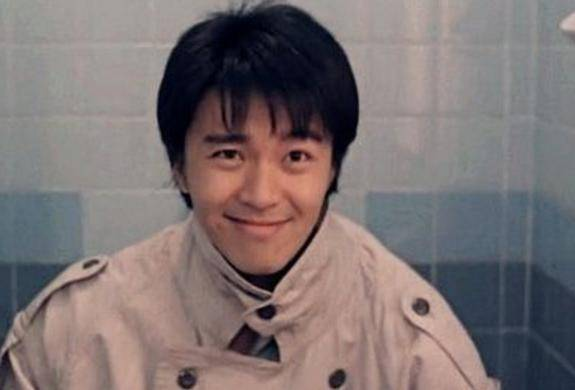
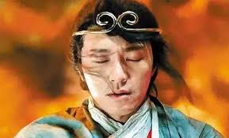
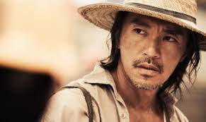

周星驰
周星驰
，籍贯浙江宁波，出生1962年6月22日。著名演员、导演、监制、编剧，同时为广东省政协委员。他的名字出自《滕王阁序》：“雄州雾列，俊采星驰"。
生平
- 1974年毕业于中华基督教会协和小学下午校。读中二时与李健仁同班，中五毕业于圣玛利奥英文中学。在学期间迷恋李小龙的电影，他立志成为一帮之主。
- 1980年，时年18岁的周星驰在丽的电视（亚洲电视前身）当特约演员而入行，首次于青春电视剧《I.Q.成熟时》演出，同时兼职办公室助理。
- 1981年经戚美珍介绍进入无线电视艺员训练班第11期的夜训班。在训练班的最后3个月开始在无线电视的电视连续剧当临时演员。1983年，毕业后不久，他被安排到儿童节目《430穿梭機》担任主持人4年，在其中的儿童单元剧《黑白僵尸》系列中扮演主角“黑僵尸”有突出的表演，很受当时的儿童观众欢迎。
- 1989年，周星驰担任《盖世豪侠》的主角，是他首次在剧集（不计单元剧）中担演第一男主角。他于剧中初露个人风格，其剧中口头禅：“坐低，饮啖茶，食个包。”（“坐下、喝口茶、吃个包子。”）“你讲嘢呀”（“你在说话吗？”）等成为了当时香港人的口头禅。周星驰由此走红。
- 1990年，周星驰担当低成本电影《赌圣》的主角，票房高达41,326,156港元，首破香港影史纪录，周星驰凭着这部电影奠定了巨星的地位。
- 1991年，周星驰担当主角的《逃学威龙》，票房高达43,829,449港元，第二次大破香港影史纪录。这时他的票房号召力与成龙、周润发并驾齐驱，三人更被喻为“双周一成”，周星驰开始被媒体公开称为“星爷”。
- 1992年，周星驰主演7部电影，其中5部囊括香港票房排行榜前五名，更凭大破香港影史纪录的《审死官》获得亚太影展影帝大奖。于是，1992年被媒体称为“周星驰年”。
- 1990年代初，周星驰开始参与编剧、导演等工作。早在1993年，周星驰便初次列名导演之一（《唐伯虎点秋香》海外发行版有注明“周星驰导演”）。
- 2001年5月2日晚，周星驰到访北京大学，在百周年纪念讲堂直接面对北大的学生与网友。近5、6年来由各著名高校的学生倡导形成的“周星驰热”也终于达到了一个高潮。周星驰和他的电影的影响已经远远超出了大屏幕的范围，渗透到了当今中国的文化甚至是日常生活中。
- 1996年和永盛娱乐完约后，他成立了星辉海外有限公司，作为出品人首先制作了《食神》。而其他电影像《唐伯虎点秋香》、《破坏之王》、《国产凌凌漆》、《大内密探零零发》、《喜剧之王》等等周星驰皆有参与幕后编导。
- 1996年，周星驰作为导演和出品人的《食神》上映后，不但票房丰收，而且引起了好莱坞片商对他导演才华的注意。二十世纪福克斯向周星驰买下《食神》版权，欲邀其重拍美国版《食神》，但最终被周星驰拒绝。
- 2001年，周星驰首次独立执导的《少林足球》，香港票房高达60,739,847港元，打破香港华语片票房纪录。该片在意大利、法国、德国等地也大受欢迎，开创演艺生涯又一高峰。此片也是他首部在欧洲大规模上映的电影。《少林足球》令周星驰成为香港电影金像奖历届以来，唯一凭同一部电影兼夺最佳导演及最佳男主角宝座的得奖者。
- 2004年推出《功夫》，香港票房收入61,278,697港元，打破《少林足球》所创下的香港华语片票房纪录。
- 2008年周星驰再次身兼监制、导演、编剧、以及主演的《长江7号》，香港票房51,402,777港元，位列香港华语片票房第7名，也是他自己的影片中票房第3高（仅次于《功夫》和《少林足球》）；《长江7号》不但在中国大陆的票房达2.03亿人民币，而且打破了马来西亚影史票房记录。
- 2010年，周星驰入主香港上市公司比高集团并担任执行董事。
- 2013年起任第十一届广东省政协委员。
- 2016年3月，周星驰监制、编剧及导演的电影《美人鱼》以全球5.55亿美元票房成为世界史上最高票房的非好莱坞电影。
成就和荣誉
- 1992年，美国最权威的文化杂志《人物》评选周星驰为全球最有趣男明星第一位；首位华人获此殊荣。
- 1999年，中国北京大学邀请周星驰走进百年纪念讲堂。
- 2000年，威尼斯国际影展举办“周星驰周”，集中放映周星驰的作品；于国际影展举办个人电影周，首位华人获此殊荣。
- 2004年，美国哈佛大学文学教授李欧梵公开表示哈佛的大学教材使用周星驰电影，哈佛师生反响之热烈和对周星驰的喜爱远超他的预想。
- 2004年，周星驰凭着自编自导自演的《功夫》创下（亚洲）印度、泰国、印尼、马来西亚、新加坡、菲律宾、台湾、香港、卡达、约旦、阿曼、科威特、巴林、（非洲）安哥拉、（欧洲）白俄罗斯、斯洛文尼亚、罗马尼亚、西班牙、葡萄牙、匈牙利、挪威、爱沙尼亚、（美洲加勒比）墨西哥、玻利维亚、委内瑞拉、哥伦比亚、巴拿马、哥斯达黎加、多米尼加、牙买加、库拉索、乌拉圭等数十个国家和地区的华语电影票房纪录。
- 2006年，德国世界杯主办者不但邀请周星驰与世界杯吉祥物共演世界杯宣传广告，而且向周星驰买下《少林足球》的版权，在慕尼黑世界杯大球场内的大屏幕上，专门播放了《少林足球》片段。不仅如此，还给周星驰配上德语，在德国电视台反复热播。
- 2006年，《米兰体育报》报导，世界杯冠军意大利队的王牌皮耶罗在世界杯决赛前的训练场上模仿周星驰的表演。原来，周星驰在意大利风靡一时，德尔维奇奥、托马西、佩鲁齐等意大利球员被邀请去为《少林足球》配音，其中，现已成为意大利球员工会主席的托马西负责为周星驰的角色配音。
- 2008年，在欧洲杯的赛场上看到了周星驰，欧洲国家杯的主办者也向周星驰买下《少林足球》的版权，在奥地利和瑞士的电视台上反复热播。
- 2009年，《功夫熊猫》导演约翰-斯蒂文森对媒体公开表示自己是周星驰的影迷，他曾组织好莱坞的工作团队专门观摩学习周星驰的电影，而《功夫熊猫》的灵感就来自周星驰的《功夫》。
- 2010年，据美国ACNeilson统计，周星驰主演的电影《唐伯虎点秋香》、《审死官》、《国产凌凌漆》包揽台湾电视历史重播率前三名。
主要作品
| 年份 | 主要作品 |
|---|
| 1990 | 望夫成龙 |
| 1991 | 新精武门 |
| 1992 | 漫画威龙 |
| 1993 | 逃学威龙3之龙过鸡年 |
| 1994 | 破坏之王 |
| 1995 | 大话西游之月光宝盒 |
| 1996 | 大内密探零零发 |
| 1997 | 97家有囍事 |
| 1998 | 行运一条龙 |
| 1999 | 喜剧之王 |
| 2001 | 少林足球 |
| 2004 | 功夫 |
| 2008 | 长江7号 |
| 2013 | 西游·降魔篇 |
| 2016 | 美人鱼 |
| 2019 | 新喜剧之王 |
电影照片



影响
BBC专访周星驰时，BBC称他是李小龙和成龙之后又一位华裔国际巨星。不过，周星驰却很谦虚地回答：“有点不同，我更注重幕后的工作。”事实上，《功夫》共获得海内、外22个电影奖项和33项提名，而海外奖项和海外票房一样占了8成以上。在此之前，周星驰早已作为版权所有人将《少林足球》海外版权卖出了2000万美元的高价，他亦独占《时代》和《纽约时报》的封面。
电影大师奥利弗·斯通公开表示：“我连续看了三部周星驰的电影，很喜欢他。我也喜欢很多中国导演，但是叫不上来他们的名字……”金庸更是和周星驰私交甚密：“我很敬佩周星驰先生，我和他是好朋友。”“他最近新推的片子《功夫》，我看过了，非常好，寓意很深刻。捧腹大笑之后，还饶有哲理的余味。”金酸莓奖创始人约翰·威尔森亦公开表示：“周星驰很棒，我爱死《功夫》了。看完《功夫》之后我想去看他其他的作品，他很有想象力，拍出来的东西能够一下子击中别人的想法。其他的中国导演我就了解不多，我希望尽快看到周星驰的新电影。”
《纽约时报》邀请周星驰作为封面人物时，称他是“从香港光着脚来的汤姆·汉克斯”。周星驰则称自己“只是一个电影人”。亦有欧洲媒体称周星驰为国际巨星。
周星驰在电影中所采用的独特文化，多年来亦经常成为学者的研究对象，影响遍及内地和海外各处。